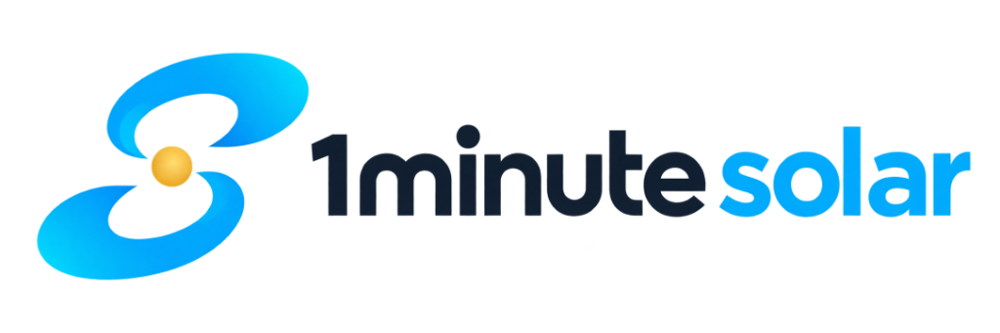

PRODUCT
ChatGPTで公開中
日本の補助金・公的支援検索
ChatGPTを、公的データでもっと確かに。
本プロダクトは、公的機関が提供するデータを使い、企業の公開情報を照らし合わせ、より正確な助成金検索を可能にするChatGPTプラグインです。
ChatGPT内で公開中。
自社プロダクトから共同プロジェクトまで、代表的な取り組みをご紹介します。
本プロダクトは、公的機関が提供するデータを使い、企業の公開情報を照らし合わせ、より正確な助成金検索を可能にするChatGPTプラグインです。
ChatGPT内で公開中。
石川県でのAIデータセンター誘致に向け、立地支援・日本海側への拠点分散・国内外アクセス等の可能性と、電力供給・通信コスト・災害リスク等の現実的課題を横断的に検証。事業・技術コンサルティングを通じて構想具体化を支援。
産業用電力の需要予測・ピーク制御システム。電力使用状況の監視・予測から充放電ロジック設計、設備連携、実機検証まで一貫支援。実設備で自動放電指令の書き込みと充放電動作を確認。
AI・IoTの設計から、サービス公開、開発の判断まで。
実現したいことや、いま困っていることから、必要な支援を選べます。
JC-STARを取得したいが、何を直せばよいか分からない。
対象製品と適合要件を整理し、現状との差分を確認。アクセス管理や更新機構などの対応設計から、証跡整理・申請準備まで支援します。
要件差分表／対応設計書／申請準備資料
自社サービスを、ChatGPTから使えるようにしたい。
提供する機能と利用体験を整理し、MCP連携や認証・権限を設計。開発・接続検証から、申請準備と審査指摘への対応まで支援します。
公開要件整理／連携設計書／申請資料
社内のデータや業務システムを、AIにつなぎたい。
既存システムの機能・データをAIから利用できる形に整理。認証・権限と実行時の制御を設計し、MCPサーバー・APIの開発と接続検証を支援します。
接続仕様書／MCP・API実装／検証結果
AIのアイデアを、販売できるサービスに具体化したい。
想定顧客・提供価値・採算を整理し、必要な機能と検証方法を具体化。試作から、公開・運用を見据えた開発計画まで支援します。
事業仮説整理／試作仕様／開発ロードマップ
提案されたAI開発、このまま発注・継続してよいのか。
提案書・見積・設計・試作品を発注者側の立場でレビュー。技術的な妥当性、費用の前提、見落としを整理し、進める・見直す判断を支援します。
評価レポート／確認すべき論点／改善提案
AI Orchestrationでは、全てのプロダクトをパートナー企業との協業によって提供しています。
私たちが開発・設計・展開に関わるプロダクト・ソリューションの一部をご紹介します。

自家消費型太陽光の導入効果と投資回収を、かんたんな入力で概算。施工・販売会社の初期提案や、企業の導入検討を支援します。
医療機関・クリニック向けに、予約受付や患者とのコミュニケーションを支援するサービス。
現場の経験やトラブル対応を知見として蓄積。出典や確認状況を確かめながら、次の担当者が使えるようにします。
ChatGPTの補助金検索を公的データで拡張。自社に合う補助金の探索や条件照合、企業調査に活用できます。
応募者への初期対応や選考をAIで支援し、採用業務を効率化します。
事業フェーズに合わせた3軸のアプローチで、AIプロダクトの事業化を支援します。
自社企画、及び共同企画によるAIプロダクト開発を手がけています。 「AIを接続する」をコンセプトにMCPを用いたAI間連携で新たな価値を創出します。
データセンター立地構想や産業用蓄電池の予測制御など、社会課題レベルのプロジェクトを共同で推進しています。
企画から開発まで。End to End consulting(全行程コンサルティング)をコンセプトに事業に必要な一連のプロセスを伴走支援します。
AIを使った事業づくりを、企画から開発まで支える設計事務所です。
AIで日々の業務を改善し、新しい製品やサービスを生み出す。自社での開発経験を活かし、企業の挑戦を支えます。
富士通、電通、野村総合研究所を経て独立。金融・公共システム、AI、IoT、エネルギー分野で製品を企画・開発。著書に『ウィキペディアで何が起こっているのか』。
はい。まず課題を整理し、AIが必要か、既存のサービスで解決できるかを一緒に考えます。
はい。お客様の立場で提案や設計を確認し、技術判断や進捗・品質の管理を支援します。社内や開発会社との役割分担もご相談いただけます。
はい。ChatGPTなどから自社のデータやシステムを使えるよう、接続の仕組み（MCP・API）を設計・開発します。
はい。オンラインで全国に対応しています。必要に応じて、対面の打ち合わせや現地調査も行います。
事業や開発のお悩みをお聞かせください。
新規事業のアイデアから、AIの活用、システム開発までご相談いただけます。
※ChatGPTプラグイン - 日本の補助金・公的支援検索の操作・不具合については、ChatGPTプラグイン - 日本の補助金・公的支援検索 サポート窓口へ。
お問い合わせ内容に、ご希望の支援メニュー、現在の状況、判断したいことをご記入ください。メニューが未定の場合もご相談いただけます。
送信前にをご確認ください。
フォームが表示されない場合は、お問い合わせフォームを別のタブで開く。